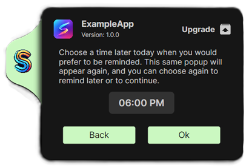

Suite Creator
Suite Creator
Deployments have a human problem: the moment your suite closes an app to upgrade it, someone might be halfway through unsaved work in that app. The user popup is Suite Creator's answer — a small, branded window shown to the logged-in user before the suite makes any changes, telling them what's about to happen, which of their running apps will be closed, and (optionally) letting them defer the run to a time that suits them.

The popup shows:
- Your company logo on the coloured tab (set on the Popups page, or enforced by an admin), and the suite logo, product name and version from the Build page.
- The action ("Upgrade", "Install", whatever text you choose) with a pickable icon.
- Your message text — separate messages for Deployment and for Removal/Rollback runs.
- A row of the user's running apps that will be closed (when linked to Process Closures — see below), with their real icons and names.
- A countdown timer with what happens when it expires.
- Later (n) — defer the run, with the number of remaining delay days shown — and Continue.
Enabling it
On the Popups page, tick Enable warning Popup. From there you can write the Deployment and Removal/Rollback messages, set the action text and icon, and use Popup Preview to see a live sample of exactly what users will get — including switching between the Deployment and Removal previews.

Linking to Process Closures
The most useful configuration for upgrades: tick Link to Process Closures on the Popups page. This changes the popup's behaviour in two ways:
- The popup only appears when it matters. If none of the processes listed on your Process Closures page are actually running on the device, there is nothing to warn the user about — the popup is skipped entirely and the suite proceeds silently.
- The popup shows the user exactly which of their apps will be closed, with each app's real icon and display name (resolved even for Store/MSIX apps), so "save your work" is concrete rather than vague.
Combined with a deferral window, this gives users a genuine chance to finish what they're doing: they see "these apps of yours will be closed", and can either save up and hit Continue, or push the whole install to later.
Deferral: letting users skip the install until later
If Max Delay Days is greater than zero, the popup shows a Later button with the remaining allowance (e.g. "Later (7)"). Choosing it opens a time picker:

The user picks a time later that day, and the suite exits without making changes (exit code 1602, so your deployment tool records the run accurately). A scheduled reminder task re-runs the suite at the chosen time, where the same popup appears again and they can defer again — until the allowance runs out:
- The first time the popup ever shows, the date is recorded. The delay allowance counts down in calendar days from then, not per-click.
- Once the user has burned through the maximum delay days, they're warned; after that the skip option is gone and they get one final countdown of your configured Timer length before the suite proceeds.
- Restarting the machine to dodge the final run doesn't work — the deployment runs silently on the next startup/logon instead.
Timers and unattended edge cases
A popup is only useful if someone is there to see it. These settings (all on the Popups page) control what happens when they aren't:
| Setting | What it controls |
|---|---|
| Timer | Minutes the user has to make a choice. A progress bar counts it down on the popup. |
| Timer Expire Action | Continue or Skip when the timer runs out with no choice made. |
| User Logged off action | What to do when the suite runs with no one logged in. |
| Locked Device action | What to do when a user is logged in but the screen is locked/asleep — including if it locks during the timer. |
| ESP action | What to do during Windows device initial setup (Autopilot ESP). |
Conditions: showing the popup only when a script says so
Two optional PowerShell gates run before the popup is shown, and both must pass:
- The global popup condition — set by an administrator for every suite built with that install of Suite Creator (see the admin guide).
- The per-suite popup condition — tick Set Popup Condition on the Popups page and write a script.
Each script must output only $True (show the popup) or $False (skip the popup and continue the suite). If a script errors, the popup is shown anyway — failing safe, so a broken script can never cause users' apps to be closed without warning.
How it works under the hood
SuiteUserPopup.exe is its own small AOT-compiled Avalonia app, bundled into every built suite (see the developer guide). The elevated SuiteExecutor launches it in the logged-in user's session and reads the outcome back from its exit code: continue (0), device locked (1), error (2), defer (3, with the chosen reminder time on stdout), timer expired (4), or missing logo (5). Everything the popup displays comes from a popconfig.json the Creator writes at build time, plus the logo images bundled next to it.